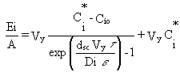
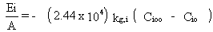
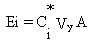

2.8 LANDFILLS WITH INTERNAL GAS GENERATION
EPA's (1988, 1990) model for computing volatilization rates from "landfills
with internal gas generation" is implemented in the user-interface (AG-VCASE
= 2) of MEPAS 3.n versions. Landfills with biodegradable organic waste
material content can generate internal gas which can greatly enhance the
emission rates of all gases. A landfill with a combination of municipal
and industrial waste disposed of in trenches, for example, can generate
volatile gases that sweep out organic vapors when it emerges from the codisposed
waste materials. Thibodeaux (1981) developed the following equations for
estimating enhanced gaseous emission rates from gas-generating landfills;
Hwang (1982) presented a procedure for estimating emission rates using
these equations:

(24)
where
Ei = emission rate of constituent i (g/s)
Ci* = concentration of constituent i in the soil
pore spaces (g/cm3)
Cio = concentration of constituent i at the soil-air interface
(g/cm3)
Vy = mean landfill gas velocity (cm/s)
A = area of landfill (cm2)
dsc = depth of the cover material (cm)
t = tortuosity (square root of 3 [= 1.73] for spherical particles)
e = porosity of the cover material to be determined by e= 1.73 Pa10/3/Pt2.
Because the value for Cio is not known, Hwang (1982) indicated that Equation 24 should be solved simultaneously with

(25)
where
kg,i = gas-phase mass-transfer coefficient of component i (cm/s)
Cioo = concentration of component i in the air far away from
the soil-air interface (g/cm3); normally equal to zero.
Equations 24 and 25 can be solved simultaneously
to get an expression for Cio that can be used in Equation 24
to estimate the emission rate. The resulting expression is

(26)
The soil-air interface concentration calculated
from Equation 26 needs to be substituted in Equation 24 to estimate the
emission rate from a landfill.
The terms in Equation 24 can be simplified if the internal gas generation
dominates the gas transport processes. The first term in the right hand
side of the equation represents the emissions associated with diffusion
of the pollutant through the soil pores. The second term represents the
convective transport term. Thibodeaux (1981) provided the range of convective
velocity of gas being emitted from municipal landfills: 7.29 x 10-4
cm/s to 3.04 x 10-3 cm/s, with an average velocity of 1.63 x
10-3 cm/s for all the landfills cited.
The magnitude of the terms in Equation 24 can be examined using some typical
values of experimental data obtained from municipal landfills and radioactive
waste sites. At a typical sweep gas velocity of 1.63 x 10-3
cm/s for experimental municipal landfills, the second term (convective
term) dominates and the first term can be neglected. On the other hand,
for the range of the sweep gas velocity expected in the radioactive waste
site (4.44 x 10-7 to 1.27 x 10-5 cm/s), the first
term (diffusive term) in Equation 24 dominates. In this latter case, the
second term in Equation 24 can be neglected. When this simplification is
made, Equation 24 reduces to Equation 16. Hence, Equation 24 can be simplified
for use in estimating the emission rate when the internal gas generation
is significant. With significant internal generation, Equation 24 can be
reduced to

(27)
The Ci* is equivalent
to Csi in Equation 23 when a waste mixture is disposed of in
a landfill and can be evaluated using this equation. The actual concentration
of constituent, in the soil space, Ci*, is a quantity
that is not often measured, and as a result, is not expected to always
be known. As a conservative approach, the saturated vapor concentration
of the constituent, Csi, may be used as defined in Equation 22 instead
of Ci*.